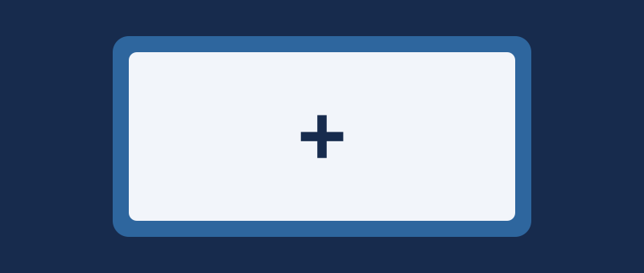

Mijn projecten

Mijn dungeon-game

Een fictief avonturenspel waarin je kamers ontdekt en tegen vijanden vecht.
Bekijk projectMijn gamingportfolio

Een fictieve website waarop ik mijn favoriete games en gamingtips laat zien.
Bekijk project